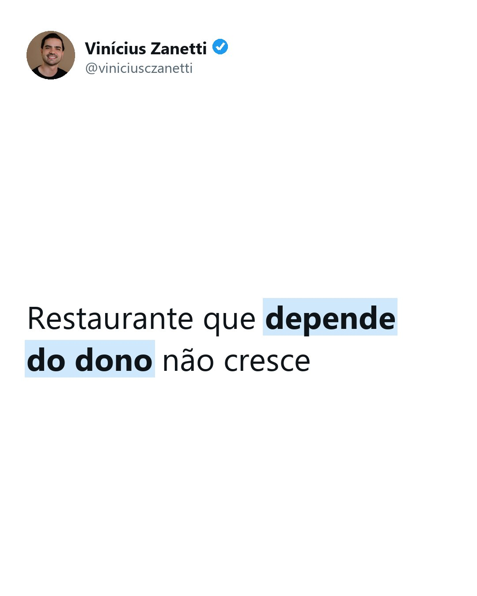

Restaurante que depende do dono: como sair da operação sem perder o controle
O restaurante só abre porque o dono está lá. O pedido especial só sai se ele autorizar. No livro Restaurante no Controle, Vinícius Zanetti chama isso de sobrevivência, não de gestão, e mostra o caminho para sair.
Publicado em 16/11/2026
O dono chega antes de todo mundo e sai depois de todo mundo. O telefone toca na folga para saber se pode trocar o acompanhamento de um pedido. A briga entre a cozinha e o salão só termina quando ele aparece. Se ele adoece, o restaurante não abre.
No livro Restaurante no Controle, o consultor Vinícius Zanetti lista a dependência total do dono entre os cinco problemas que mais derrubam restaurantes. E é duro no diagnóstico.

"Esse modelo não é gestão. É sobrevivência."Vinícius Zanetti, no capítulo Introdução do livro Restaurante no Controle
Por que o restaurante depende tanto do dono?
Não é porque a equipe é fraca. É porque o restaurante não tem estrutura para funcionar de outro jeito. A receita está na cabeça do cozinheiro. O critério de qualidade está na cabeça do dono. Ninguém sabe ao certo quem responde pelo quê, e qualquer decisão fora do comum sobe para a única pessoa que sabe decidir.
O livro descreve esse quadro como operação refém de pessoas: o gerente que resolve tudo na base da experiência pessoal, sem protocolo, e o atendente que age conforme o humor do dia. Enquanto for assim, o dono não pode sair, porque é ele quem segura tudo.
Como fazer o restaurante funcionar sem o dono?
É uma pergunta que o dono digita no Google com frequência, e a resposta do método M.E.G.A. não passa por contratar um gerente e torcer. Passa por três estruturas que a etapa Garante implanta: responsáveis com nome, hierarquia de decisão e processos documentados com checklists. O gerente, se existir, opera dentro delas.
O objetivo não é o dono sumir. É a presença dele deixar de ser necessária em tempo integral para a operação andar, como o livro descreve citando Scalco, autor de um artigo técnico sobre gestão de hamburgueria.
Como delegar funções no restaurante?
Delegar não é dizer "a equipe cuida disso". O livro é claro:
"Quando todos são responsáveis, ninguém é responsável."Vinícius Zanetti, no capítulo Garante do livro Restaurante no Controle
Cada processo implantado tem um responsável definido, com nome e função. Não um departamento. Não a equipe. Uma pessoa que responde pela execução e pela qualidade daquela tarefa. A tabela abaixo mostra como fica, neste exemplo, numa hamburgueria pequena. Os nomes são substituídos pela função.
| Processo | Neste exemplo, responsável | Como o dono confere sem estar lá |
|---|---|---|
| Abertura e fechamento | Líder de cozinha do turno | Checklist assinado, foto no grupo |
| Fechamento de caixa | Responsável pelo caixa | Relatório do sistema contra valores conferidos |
| Porcionamento e ficha técnica | Chapeiro de cada turno | CMV real contra o teórico no mês |
| Pedido de compra | Quem cuida do estoque | Pedido segue o ponto de reposição |
| Expedição do delivery | Responsável pela expedição | Reclamações e estornos registrados |
A coluna da direita é o que muda tudo. O dono deixa de conferir olhando e passa a conferir pelo registro. O pedido de compra pelo ponto de reposição, por exemplo, está explicado em Quanto comprar de cada insumo no restaurante.
Quais decisões ficam com o funcionário, o gerente e o dono?
Esse é o ponto que mais tira o dono do telefone. O livro pede uma hierarquia de decisão clara: quais decisões o colaborador toma sozinho, quais precisam ser validadas pelo gerente e quais precisam chegar ao dono. Sem isso, tudo sobe, e o dono vira gargalo de decisões pequenas.
| Quem decide | Neste exemplo, decisões |
|---|---|
| Colaborador sozinho | Trocar um acompanhamento a pedido do cliente, refazer um lanche que saiu errado e registrar a perda |
| Gerente ou líder valida | Cortesia para cliente insatisfeito, troca de folga entre funcionários, compra emergencial pequena |
| Só o dono | Preço do cardápio, contratação e demissão, fornecedor novo, campanha com desconto |
Os limites são um exemplo. Cada dono define os seus. O que importa é estarem escritos e a equipe conhecê-los. Decisão que não está escrita sobe para o dono.
Checklists: o que tira o dono do balcão
O dono fica no balcão porque é o único que lembra de tudo. O checklist tira essa função dele. O livro cita os de abertura e fechamento, de controle de temperaturas e de organização do estoque, e lembra que eles existem para o funcionamento ser autônomo.
"Processos não existem para engessar o negócio. Existem para protegê-lo."Vinícius Zanetti, no capítulo Introdução do livro Restaurante no Controle
Mas checklist sem treino não funciona. O livro trata o treinamento como o primeiro movimento da etapa Garante: a pessoa vê o processo, executa com supervisão e só então assume a tarefa. Pular esse passo é a forma mais rápida de o dono voltar para o balcão em duas semanas.
Organograma de restaurante pequeno: precisa?
"Organograma de restaurante pequeno porte" é uma busca que o Google sugere. Num restaurante pequeno, o desenho formal importa menos do que duas perguntas respondidas por escrito: quem responde por cada processo e quem decide o quê. Com essas duas respostas, o organograma está feito, mesmo que seja uma folha com cinco nomes.
Como o dono sabe que pode se afastar?
Quando os números contam o que aconteceu. O livro descreve o resultado da etapa Garante assim: a equipe sabe o que fazer e como fazer, as rotinas acontecem com regularidade, as responsabilidades estão claras e o dono começa a deixar de ser o único ponto de controle do negócio.
Na prática, o dono que se afasta troca o balcão pelo acompanhamento. Olha o fechamento de caixa todo dia, o CMV parcial toda semana e a DRE todo mês. E faz a reunião semanal com a liderança, como a descrita em O erro mais caro da semana.
Por onde começar: anote, por uma semana, toda vez que alguém chamou você para decidir algo. No fim da semana, separe a lista em três colunas: o que o colaborador poderia ter decidido, o que o líder poderia validar e o que é seu. Escreva as duas primeiras colunas e ensine à equipe.
Perguntas frequentes
Como fazer o restaurante funcionar sem o dono?
Com três estruturas: um responsável com nome para cada processo, uma hierarquia de decisão escrita e processos documentados com checklists, ensinados na prática. O dono passa a acompanhar pelos registros e indicadores.
Como delegar funções no restaurante?
Defina um responsável com nome e função para cada processo, e não a equipe em geral. Treine essa pessoa e combine como você vai conferir a execução sem estar presente.
O que é hierarquia de decisão no restaurante?
É a definição, por escrito, de quais decisões o colaborador toma sozinho, quais o gerente valida e quais só o dono toma. Ela evita que toda decisão pequena chegue ao dono.
Restaurante pequeno precisa de organograma?
Precisa responder duas perguntas por escrito: quem responde por cada processo e quem decide o quê. Num restaurante pequeno, isso já cumpre o papel do organograma.
Fontes
- Vinícius Zanetti, Restaurante no Controle: Método M.E.G.A. de gestão para restaurantes (Belo Horizonte, 2026), capítulo 4, Garante. Responsáveis com nome e função, hierarquia de decisão, treinamento e acompanhamento. A dependência do dono e as citações sobre sobrevivência e processos estão na Introdução; os checklists, no capítulo 3, Estrutura.
- Presença do dono deixando de ser necessária em tempo integral: Rafael Scalco, Consultoria para Hamburgueria, artigo técnico da Politi Academy citado no livro. As tabelas de responsáveis e de decisões são hipotéticas.